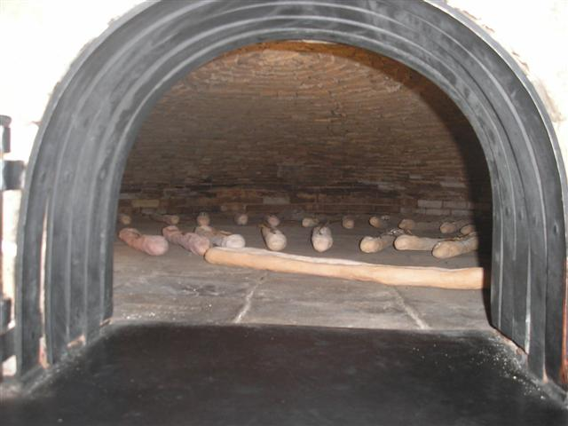

A piece of Tampa history, in Riverview
Silver Ring began in 1947 in Ybor City, when Angelo Cacciatore, a boxing fan, named his cafe for the ring. His Cuban sandwich became a Tampa Bay landmark and has stayed the same ever since.
Dana Neville and her mother bought the Riverview cafe in 1994, and Dana has run it for more than thirty years. Every morning she drives to Ybor City for fresh Cuban bread, and the meats come from the family that has supplied Silver Ring since the 1950s.
